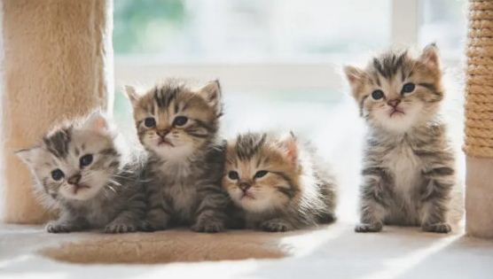
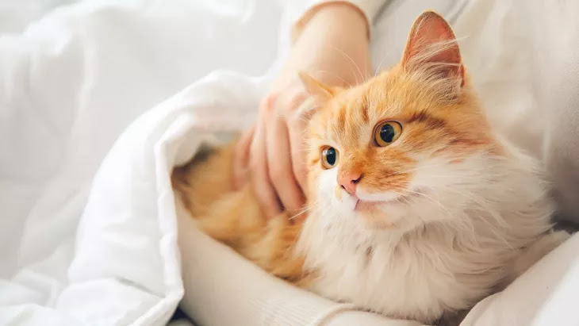
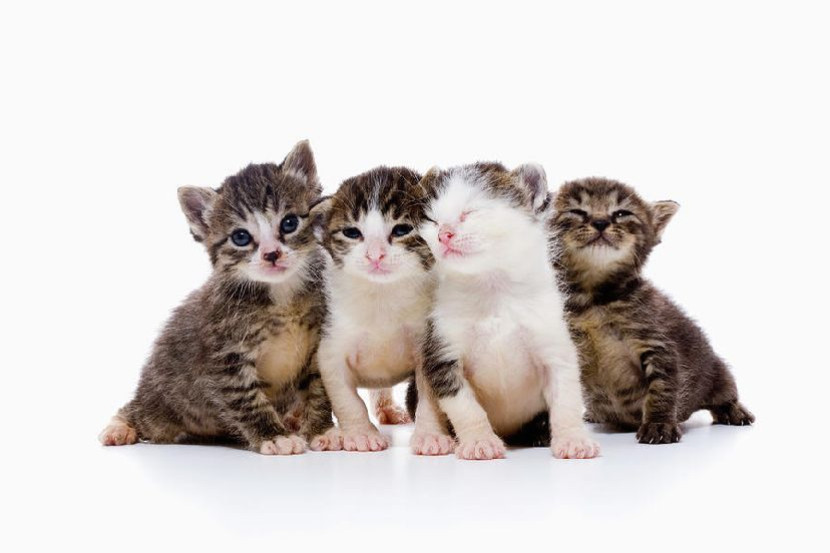

Artikel

Manfaat Memelihara Kucing
Kucing dikenal sebagai hewan peliharaan yang mandiri dan misterius, namun di balik sifatnya tersebut, kucing memiliki banyak manfaat bagi kesehatan dan kesejahteraan manusia.

Cara Merawat Kucing
Kucing adalah salah satu hewan peliharaan paling populer di dunia, dan dengan alasan yang bagus. Mereka adalah hewan yang penyayang, lucu, dan mandiri. Namun, untuk memastikan kucing yang bahagia dan sehat, penting untuk memberikan mereka perawatan yang tepat.

Kucing : Makhluk Misterius yang Dicintai
Kucing adalah salah satu hewan peliharaan terpopuler di dunia. Mereka dikenal dengan sifatnya yang mandiri, penyayang, dan kadang-kadang misterius. Kucing memiliki banyak perilaku unik yang membuat mereka menjadi hewan yang menarik untuk dipelajari.